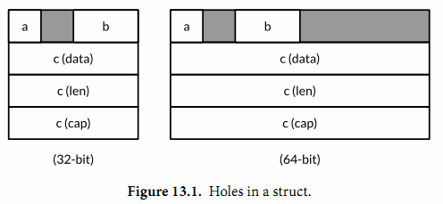

13.1. unsafe.Sizeof, Alignof 和 Offsetof
unsafe.Sizeof函数返回操作数在内存中的字节大小，参数可以是任意类型的表达式，但是它并不会对表达式进行求值。一个Sizeof函数调用是一个对应uintptr类型的常量表达式，因此返回的结果可以用作数组类型的长度大小，或者用作计算其他的常量。
import "unsafe"
fmt.Println(unsafe.Sizeof(float64(0))) // "8"
Sizeof函数返回的大小只包括数据结构中固定的部分，例如字符串对应结构体中的指针和字符串长度部分，但是并不包含指针指向的字符串的内容。Go语言中非聚合类型通常有一个固定的大小，尽管在不同工具链下生成的实际大小可能会有所不同。考虑到可移植性，引用类型或包含引用类型的大小在32位平台上是4个字节，在64位平台上是8个字节。
计算机在加载和保存数据时，如果内存地址合理地对齐的将会更有效率。例如2字节大小的int16类型的变量地址应该是偶数，一个4字节大小的rune类型变量的地址应该是4的倍数，一个8字节大小的float64、uint64或64-bit指针类型变量的地址应该是8字节对齐的。但是对于再大的地址对齐倍数则是不需要的，即使是complex128等较大的数据类型最多也只是8字节对齐。
由于地址对齐这个因素，一个聚合类型（结构体或数组）的大小至少是所有字段或元素大小的总和，或者更大因为可能存在内存空洞。内存空洞是编译器自动添加的没有被使用的内存空间，用于保证后面每个字段或元素的地址相对于结构或数组的开始地址能够合理地对齐（译注：内存空洞可能会存在一些随机数据，可能会对用unsafe包直接操作内存的处理产生影响）。
| 类型 | 大小 |
|---|---|
bool |
1个字节 |
intN, uintN, floatN, complexN |
N/8个字节(例如float64是8个字节) |
int, uint, uintptr |
1个机器字 |
*T |
1个机器字 |
string |
2个机器字(data,len) |
[]T |
3个机器字(data,len,cap) |
map |
1个机器字 |
func |
1个机器字 |
chan |
1个机器字 |
interface |
2个机器字(type,value) |
Go语言的规范并没有要求一个字段的声明顺序和内存中的顺序是一致的，所以理论上一个编译器可以随意地重新排列每个字段的内存位置，虽然在写作本书的时候编译器还没有这么做。下面的三个结构体虽然有着相同的字段，但是第一种写法比另外的两个需要多50%的内存。
// 64-bit 32-bit
struct{ bool; float64; int16 } // 3 words 4words
struct{ float64; int16; bool } // 2 words 3words
struct{ bool; int16; float64 } // 2 words 3words
关于内存地址对齐算法的细节超出了本书的范围，也不是每一个结构体都需要担心这个问题，不过有效的包装可以使数据结构更加紧凑（译注：未来的Go语言编译器应该会默认优化结构体的顺序，当然应该也能够指定具体的内存布局，相同讨论请参考 Issue10014 ），内存使用率和性能都可能会受益。
unsafe.Alignof 函数返回对应参数的类型需要对齐的倍数. 和 Sizeof 类似, Alignof 也是返回一个常量表达式, 对应一个常量. 通常情况下布尔和数字类型需要对齐到它们本身的大小(最多8个字节), 其它的类型对齐到机器字大小.
unsafe.Offsetof 函数的参数必须是一个字段 x.f, 然后返回 f 字段相对于 x 起始地址的偏移量, 包括可能的空洞.
图 13.1 显示了一个结构体变量 x 以及其在32位和64位机器上的典型的内存. 灰色区域是空洞.
var x struct {
a bool
b int16
c []int
}
下面显示了对x和它的三个字段调用unsafe包相关函数的计算结果：

32位系统：
Sizeof(x) = 16 Alignof(x) = 4
Sizeof(x.a) = 1 Alignof(x.a) = 1 Offsetof(x.a) = 0
Sizeof(x.b) = 2 Alignof(x.b) = 2 Offsetof(x.b) = 2
Sizeof(x.c) = 12 Alignof(x.c) = 4 Offsetof(x.c) = 4
64位系统：
Sizeof(x) = 32 Alignof(x) = 8
Sizeof(x.a) = 1 Alignof(x.a) = 1 Offsetof(x.a) = 0
Sizeof(x.b) = 2 Alignof(x.b) = 2 Offsetof(x.b) = 2
Sizeof(x.c) = 24 Alignof(x.c) = 8 Offsetof(x.c) = 8
虽然这几个函数在不安全的unsafe包，但是这几个函数调用并不是真的不安全，特别在需要优化内存空间时它们返回的结果对于理解原生的内存布局很有帮助。